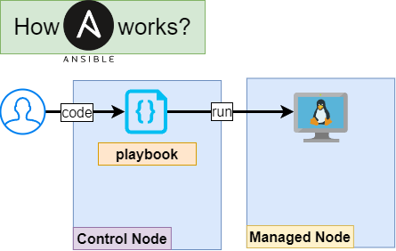

0. Introduction
{kind=link}
Ansible is an open-source IT automation tool that automates infrastructure provisioning, configuration management, and application deployment. It allows you to manage and configure systems, networks, and applications through a simple, human-readable language called YAML.
Ansible uses a push-based model, where a central control node pushes out commands to the managed nodes. The control node communicates with the managed nodes over ssh and does not require any additional software to be installed on the managed nodes.
Ansible uses a concept called playbooks to define and execute automation tasks. A playbook is a YAML file that describes a set of tasks to be executed, along with their dependencies and configuration options. Playbooks can be used to automate tasks such as installing software, configuring services, and deploying applications.
Ansible also provides a large number of pre-built modules that can be used to perform common tasks, such as managing files, users, and services. These modules can be used to automate tasks across a wide variety of systems and platforms, including Linux, Windows, and network devices.
Ansible is a powerful automation tool that allows you to automate and manage your IT infrastructure in a simple, consistent, and repeatable way. It can help you save time and reduce errors by automating repetitive tasks and ensuring that your systems are configured consistently across your organization.
---
- hosts: nodes
become: true
tasks:
- name: Install (apt) aptitude
apt:
name: aptitude
state: latest
update_cache: true
- name: Install required system packages
apt:
pkg:
- apt-transport-https
- ca-certificates
- curl
- software-properties-common
- python3-pip
- virtualenv
- python3-setuptools
state: latest
update_cache: true
- name: Add Docker GPG apt Key
apt_key:
url: https://download.docker.com/linux/ubuntu/gpg
state: present
- name: Add Docker Repository
apt_repository:
repo: deb https://download.docker.com/linux/ubuntu focal stable
state: present
- name: Update apt and install docker-ce
apt:
name: docker-ce
state: latest
update_cache: true
- name: Install Docker Module for Python
pip:
name: docker
- name: Pull default Docker image
community.docker.docker_image:
name: ubuntu
source: pull
- name: Create default containers
community.docker.docker_container:
name: "docker{{ item }}"
image: ubuntu
command: "touch /tmp/example1"
state: present
with_sequence: count=2